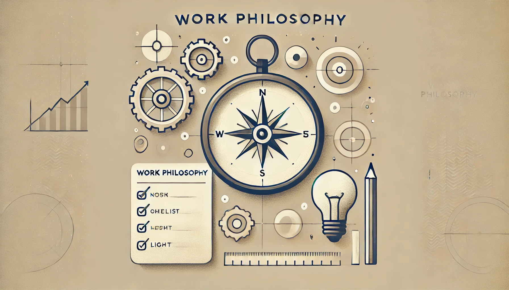

About me
I'm a programmer because I enjoy creating digital solutions to real problems. I work primarily with the MERN stack and have experience in Java and Python. I have also worked with C, Ada, and even Assembler, which has given me strong adaptability and versatility in my technical approach.
Education and hobbies

I am a student of software engineering, with a strong focus on web development and game development as hobbies. Although I have no direct work experience, my academic background and dedication to independent projects have provided me with a solid foundation.
Work philosophy
My philosophy: If you're going to do something, do it well. If you can't, it's best not to do it at all.
This reflects my commitment to quality in everything I do.
Soft skills
Alongside technical skills, I bring valuable soft qualities like leadership, an ability to find common ground, and a focus on positive relationships. My adaptability and strong work ethic make me motivated and results-oriented.
Inspiration and Principles
What inspires me most is knowing my work has value. Outside work, I am an avid gamer, enjoy puzzles, and write songs. A guiding principle for me is: “Success is the ability to go from
failure to failure without losing enthusiasm.”
This philosophy keeps me resilient and constantly growing.